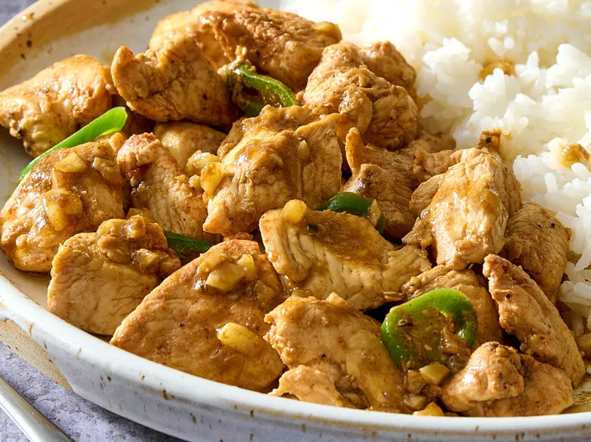

This dish is perfect for weeknights or when you have run out of ingredients. Most ingredients are pantry staples and this dish is quick and easy to make. Serve over steamed white rice.

Prep Time: 10 mins
Cook Time: 1 hr 10 mins
Additional Time: 1 mins
Servings: 3